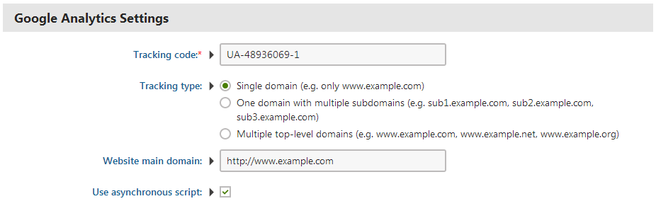
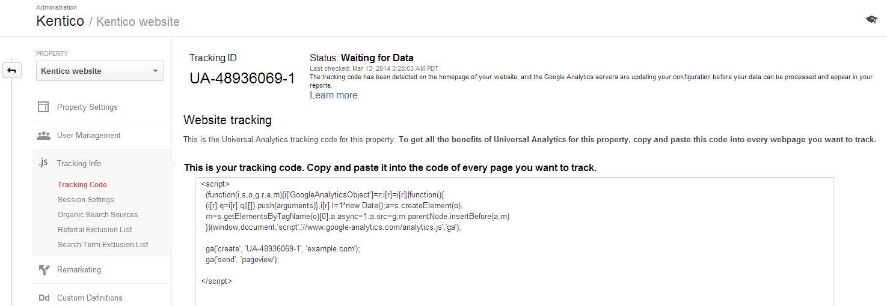
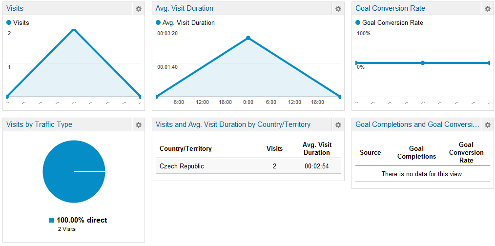

Using Google analytics
Kentico allows you to use Google analytics as an alternative way of measuring and analyzing the key metrics of your website. This is done by placing the Google analytics web part onto your website.
Setting up a Google analytics account
To be able to configure the Google analytics web part in Kentico, you need to have an existing Google analytics account set up for the website that you want to monitor.
On the Google analytics website, you can either Sign in to Analytics using your existing account or Sign up to create a new account if you don't have one already.
Signing in using an existing account
When you sign in using an existing Google analytics account, the Home tab listing your currently tracked websites opens.
To access your account administration:
Switch to the Admin tab in the top bar of the page.
Click Account Settings.
Adding an account
You can add a new account from your existing account's settings.
While still in Account Settings, click the Account drop-down list.
Select the Create new account option.
Creating a new account
You can also Sign up on the Google analytics website to create a new Google analytics account.
Click the Sign up button.
Fill in the information about the website you want Google analytics to track:
Account Name – the name under which you want your account to be listed in Google analytics.
Website Name – the name under which you want your website to be listed in Google analytics.
Website URL – the URL used to access the website you want to track by Google analytics.
Click Get Tracking ID.
Accept the Google Analytics Terms of Service Agreement.
On the next page, note down the Tracking ID, which you will use to configure the Google analytics web part in Kentico.
Using the Google analytics web part
Now that your Google analytics account is ready and you have your Tracking ID, place the Google analytics web part onto your website in Kentico.
Users with the Design website permission for the Design module can manage web parts on a page's Design tab.
Open the Pages application.
Select the root of your site in the page tree.
Switch to the Design tab.
Place the Google analytics web part onto the page.
We recommend placing the web part to a web part zone that is inherited by all pages on your website. See also: Inheriting portal engine page content
The Google analytics web part has no impact on the page's live site appearance.
In the web part's properties, enter the Tracking code that you received on the Google analytics website.

Configuring the Google analytics web partBy selecting the Use asynchronous script check box, you can have the web part use a different version of the tracking script. The script loads sooner when a visitor arrives on the website. This makes it more likely that the analytics count the visit into the statistics, even when the visitor leaves the page before it is fully loaded.
Click Save & Close.
You should now see the Google analytics web part in the target web part zone.
Using the Javascript web part
You can also place the Javascript web part onto the root page of your site and copy the Tracking code from the Google analytics website into the web part's In-line script field. Moreover, you can select the location on the page, where the in-line javascript code will be inserted, in the web part's In-line script page location drop-down list.
Entering a different Google analytics Tracking ID for each site culture
When working with multilingual websites, you may want to track the performance of each language variant separately using a unique Tracking ID.
To configure the system to use a different Tracking ID for each site culture, insert a macro condition into the Tracking code property of the Google analytics webpart:
Open the Pages application.
Navigate to the page containing the Google analytics web part and open its properties dialog window.
Click on the small arrow next to the Tracking code field (located under the Google Analytics Settings heading).
Enter a macro condition that checks the current visitor's culture and inserts a Tracking ID into the field based on the result. For example, the following macro condition checks if the current visitor is on the 'en-US' version of a site and inserts a tracking ID accordingly:
Checking the visitor's culture using macro expressions{% LocalizationContext.CurrentCulture.CultureCode == "en-US" ? "UA-120055086-1" : "UA-120055086-2" %}Click Save & Close.
Visitors to the English version of your site are now tracked using the first Tracking ID, visitors to other language variants are tracked using the second one.
Checking Google analytics tracking status
Open the Google analytics website, sign in and navigate to the Admin tab.
Select your account in the Account drop-down list.
Select your website in the Property drop-down list.
Click on Tracking info -> Tracking code.
Next to the Tracking ID, you can see Status.
The status should change several minutes after placing the Google analytics web part in Kentico.

Monitoring the tracking status
The possible tracking statuses are:
Waiting for Data – The tracking code has been detected on the homepage of your website, and the Google Analytics servers are updating your configuration before your data can be processed and appear in your reports.
Tracking Installed – You’ve got the tracking code set up, and it’s collecting and sending data to your property. You can still use the other tools, like the Google Analytics Debugger, to do a more in-depth analysis or to troubleshoot your set-up.
Unknown – There's no data available that Google Analytics can use to tell if your tracking code is working. Check your set up to see if you can find a solution.
Leave up to 24 hours for Google analytics to aggregate the website's data and for the status to change from Waiting for Data to Tracking installed.
Viewing Google analytics reports
Once Google analytics tracking is working correctly, you will be able to see reports of your website's visits and other statistics on the Google analytics website. Refer to the Google analytics Help website for more information on the various types of reports.

Viewing Google analytics reports